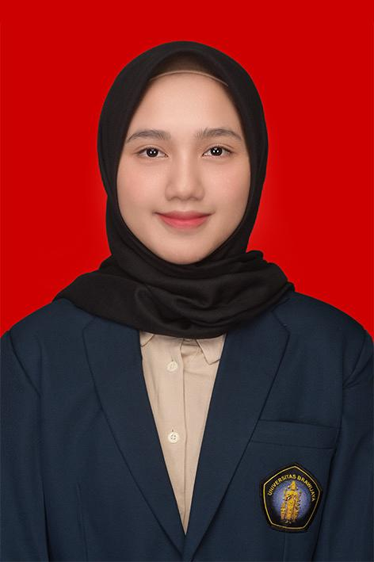
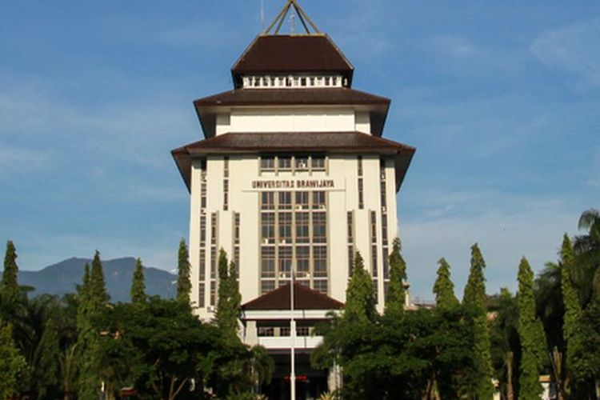

Najwa Tazkiya Rahmannajwatazkiya15@gmail.com +62 856 6819 4172 |
 |
|
Nama Lengkap :
Najwa Tazkiya RahmanTempat,Tgl Lahir :Kota Tengah, 15 November 2005Jenis Kelamin :PerempuanAlamat :Jl. Surya Garuda Sakti, Pekanbaru |
|
|

|
Pendidikan :Universitas Brawijaya (2024 - Sekarang)SMA IT Al-Bayyinah (2021 - 2024) SMP IT Al-Bayyinah (2018 - 2021) |